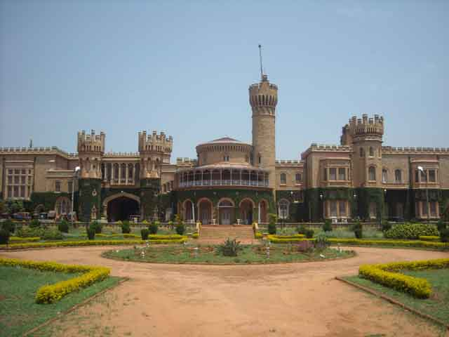
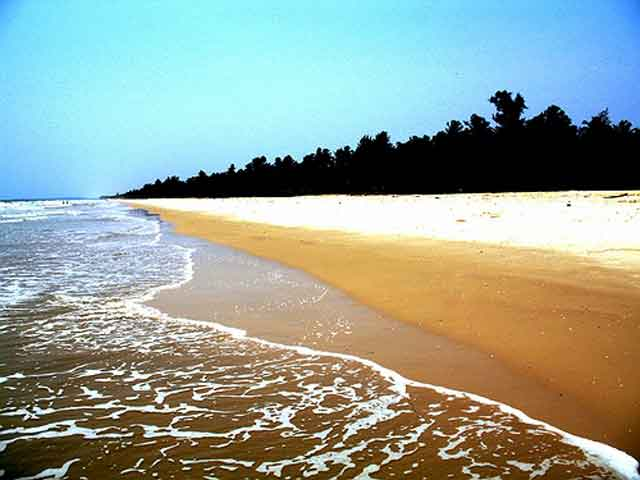

Top places to visit in karnataka
1.Banglore
Bangalore, also known as Bengaluru (Kannada) is the capital of the Indian State of Karnataka. Bangalore is nicknamed the Garden City and was once called a Pensioner's Paradise. Located on the Deccan Plateau in the south-eastern part of Karnataka, Bangalore is India's third most populous city. There are a number of expats from across the world living in the city, thanks to the growing presence of Multi-National Companies.
Today as a large city and growing metropolis, Bangalore is home to many of the most well-recognised colleges and research institutions in India. Numerous public sector heavy industries, software companies, aerospace, telecommunications, and defence organizations are located in the city. Bangalore is known as the Silicon Valley of India because of its position as the nation's leading IT exporter. A demographically diverse city, Bangalore is a major economic and cultural hub and the fastest growing major metropolis in India.
2.Bijapur
Bijapur is a historical city in Karnataka. The city is famous for its ancient monuments, mosques, mausoleums, palaces, fortifications and other structures. Situated at a distance of about 530 km to the northwest of Bangalore, Bijapur attracts scores of tourists who flock to have a glimpse of the historical, cultural and architectural beauty of the city.
Bijapur is an ancient city that was founded in the 10th-11th century by Kalyani Chalukyas, the then rulers of South India. During that period it was known as Vijayapura which means the ‘City of Victory.’ Later it came under the rule of the Yadavas and then the Bahmani Sultanate of Gulbarga. It was the capital of the Adil Shahi kings from 1489 to 1686. The city came under the dominion of Aurangazeb in 1686 and from then the downfall of this city started.
3.Coorg
Coorg, officially called Kodagu, is the most sought after and popular hill station of Karnataka. Lying serenely amidst high mountains, Coorg’s landscape stays misty throughout the year. The aboriginals of the place are Kodavas. Apart from Kannada, the other two main languages of this hill station are Kodagu and Kodava. The best time to visit Kodagu is between October to May and the peak season for this hill station is within February to May. Kodagu is the largest producer of Coffee in India. Also, it is one of the places with highest rainfall across the nation. Undulating hills covered in lush green forests and a landscape dotted with coffee plantations, tea gardens and orange groves, this hill station has breathtakingly stunning scenic beauty.
4.Gorkhana
Gokarna is a small temple town located in Uttara Kannada district of Karnataka state in India,[1] It has a population of around 20,000. The main temple and deity is Shiva, who is also known as Mahabaleshwara. This temple houses what is believed to be original image of Shiva's linga (Atmalinga). Gokarna is known as one of the seven important Hindu pilgrimage centers. It is on what was once an unspoiled beach near the estuary of the river Aghanashini. Recently, due to the influx of tourists, the character of the town has changed; it is no longer just a centre of pilgrimage, though large numbers of devotees visit to offer prayers and worship to Shiva. Due to its laid-back, unspoiled and rustic nature many younger western tourists started visiting Gokarna about three decades ago. Enterprising locals started stores and restaurants. Later the onset of millennial youth increased the tourism. Now the resorts also cater to wealthier tourists.
5.Hampi
Hampi is one of finest historical sites of ancient age in the world. It was the initial capital city of famous historical Vijayanagara Empire located on the bank of Tungabhadra River about 11 km away from Hospet City. Hampi is a small location covered an area of 25 sq. km. and it is totally bounded by mountains (Anjaneya, Malyavanta and Matanga Hills) by the three sites and rest one site is bordered by Tungabhadra River. It is believed by Hindus that Hampi was a kingdom of Monkeys (according to the Ramayana) before Vijayanagara Empire in pre-ancient age (around 1 CE) when the city was known as Kishkindha. The traditional culture of Hampi will drag your mind to be a witness of this culture and architecture. Hampi was served as capital city of Vijayanagara Empire more over 200 years (around 1336 AD to 1565 AD). Vijayanagara Rulers decorated and designed this city with lots of lovely temples, palaces, market streets and monuments which made this location one of the famous ancient metropolises in India. This super ancient landscape is selected as a World Heritage site by UNESCO.
6.Manglore
Mangalore lies at a distance of 350 kilometers from Bangalore which is the capital of Karnataka and it is the main port city of the state of Karnataka. Mangalore also serves as the administrative headquarters of the south-west district of Karnataka called Dakshina Kannada and is bound by the mountain ranges of Western Ghat and the Arabian Sea on all sides. The city has got its name from Mangaladevi, the Hindu Goddess. Mangalore serves as the most important port of India and many a times it is also used as a point of staging for traffic of the sea near the Malabar Coast. Mangalore enjoys a tropical type of climate and it is mainly because of the South West Monsoon received by the city on the way to the Arabian Sea. Cashew and more than 75% coffee exports are handled by the port in Mangalore city. Tourism in Mangalore is also flourishing in the recent times that many holiday tourists and vacation lovers love this place for its lush green parks, pristine lakes, warm beaches and much more.
7.Mysore Palace
Mysore Palace, also known as Amba Vilas Palace and Mysore Aramane, is one of the most magnificent and largest palaces in India. Situated in the southern state of Karnataka, it used to be the official residence of the Wodeyar Dynasty, the rulers of Mysore from 1399 to 1950. The grand palace stands tall in the heart of Mysore city and attracts visitors from across the world. Being one of the prime attractions in India after the Taj Mahal, it certainly deserves a place in every traveler’s bucket list. So why not visit Mysore Palace this holiday season? Before you plan your trip and book your hotels in Mysore, read this blog to know more about the palace, its history, timings, entry fee, and other interesting facts.